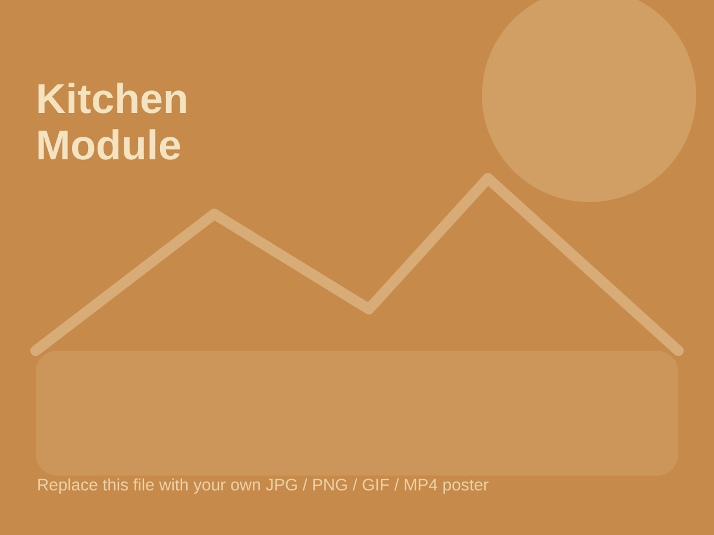

Object Design / 2026
Material Kitchen Module

Overview
A compact kitchen module that transforms material offcuts into a functional display object. The design combines a timber benchtop, ceramic tile inlays, plywood storage, and a lightweight frame.
Use this page to show process photos, joinery details, drawings, prototypes, and final documentation.
Material Logic
The project demonstrates how small leftover materials can become design drivers rather than waste. Each material is selected for function, texture, and visibility.